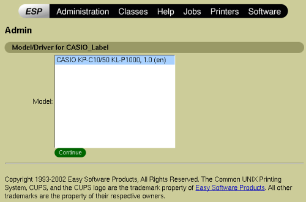

cups2pegg - The CUPS Plugin for pegg INSTALLATION
Modifications Copyright (C) 2004 Daniel Amkreutz aixpresso@web.de (public key)
Before you begin
cups2pegg utilizes these programs:
Please make sure that you have installed these programs and that they are working.
Furthermore these tools should be in your $PATH Enviroment (eg. they should be found by which pegg etc.)
cups2pegg V0.21a is only useable with pegg_el V0.10 or pegg V0.21 !
If you use an older Version of pegg you will have to use cups2pegg Version 0.1
Procedure
The installation procedure has four parts.
- First you must set some Variables in the cups2pegg script
- Then you have to copy the cups2pegg files into the cups directory
- Next you can set up the printer in cups
- At last you should set some parameters in your printing application
Part 1 - Set up the variables in the cups2pegg script
Before you can use cups2pegg you have to modify the values of some variables in the cups2pegg script.
For this open the cups2pegg executable with your favourite text editor. You will find the variables at the
beginning of the script. Change the values for each variable to match your system configuration.
Part 2 - Copy cups2pegg & neccessary ppd's into the cups directory
Copy the cups2pegg executable into your CUPS-Backend directory (eg. /usr/lib/cups/backend).
If you do not know your CUPS-Backend directory you might try searching for some default Backends (find / -name parallel)
Next copy the ppd files to the CUPS PPD Directory (eg. /usr/share/cups/model).
Make sure that cups2pegg is executable by the cups deamon. And every ppd is readable by cups.
Now restart the cups deamon (/etc/init.d/cupsys restart).
Part 3 - Printer Setup in CUPS
Open your CUPS Configuration page with your favourite Browser (http://localhost:631).
There, under "Printers" select "Add Printer".
Now you should name the printer, write a description etc. Feel free to write something and click on "continue"
Now select "Pegg Printer" and click on "continue"
For the Device URI enter cups2pegg:/SCRATCH_DIRECTORY. Here I've choosen /tmp as scratchdirectory.
The directory will contain some files needed by the backend to convert the print data. These files
will be overwritten automatically each time. So there is not a lot of space required. Click on "continue"
Here select "CASIO" as Manufacturer. "continue"

At last you have to select the correct ppd file for your printer
You are done with part 3.
Part 4 - Setting margins & pagesize
Before you start printing, make sure to set the papersize and margins for the printer correctly.
This is mostly done by your printing client application (like kprinter). Set all margins to zero.
Make a Preview first. And look if the pagesize is for example about 512x64 px.
If the preview is ok then make a real print.
Congratulations. That is all.